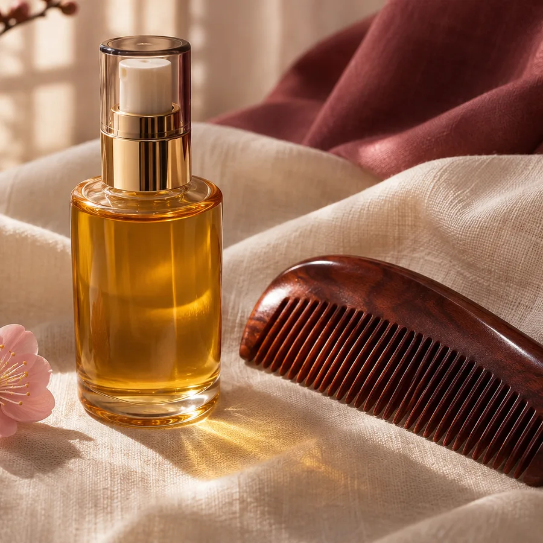
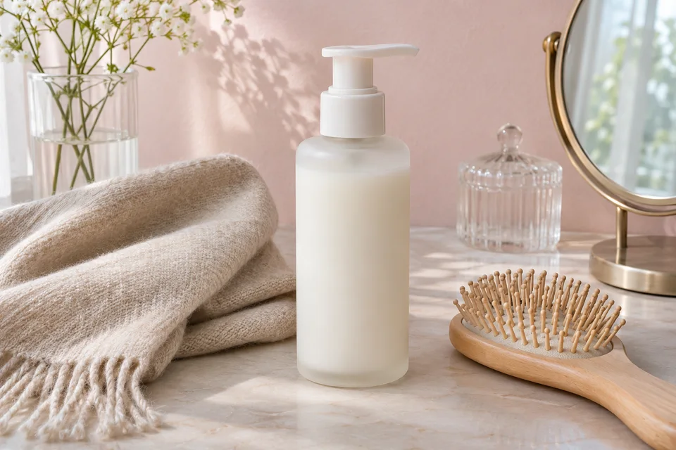
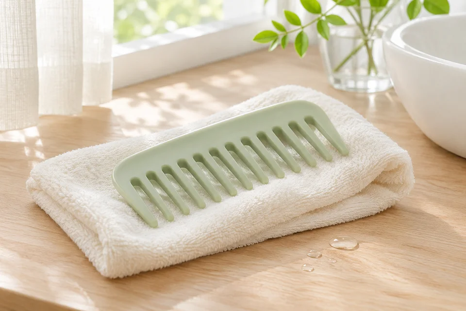

髪と肌の「迷う」を、
選べるに変える。
髪が広がる。スキンケアが続かない。何を買うか迷う。そんな毎日の悩みから、使い方と選び方を見つける美容ノートです。
ジャンルから探す
今、気になることから。
目的が決まると、アイテムも選びやすくなる。まずは毎日の悩みに近いテーマへ。
使い方を知る。条件を比べる。
実際に使っていない商品を、体験談として紹介することはありません。広告を含む記事には、記事内で広告・PRを表示しています。
ヘアケア・美容家電
13記事広がり、乾かし方、オイルの違い。髪の悩みから探す。

ヘアオイル2商品を比較
LUTYとEmma Cocarneのヘアオイルを、公式掲載の価格・容量・選べるタイプ・商品説明で比較。購入前に確認したい点も整理します。
詳しく読む →
ラサーナのヘアエッセンス、「しっとり」と「さらさら」の選び方
選ぶ基準は欲しい仕上がり。どちらもタオルドライ後に使う、洗い流さないトリートメントです。
詳しく読む →
乾いた髪にヘアミルクを使うとき、どこにつける？
朝の毛先が広がるときは、乾いた髪に使えるかを最初に確認。オルビスのヘアミルクを例に使い方を整理します。
詳しく読む →
重いドライヤーで腕が疲れる。Re・De Hairdry+を選ぶ前の3チェック
軽さだけで決めず、本体重量の条件、スタンド、海外対応を確認。Re・De Hairdry+（DR02A）の公式仕様から選び方を整理します。
詳しく読む →
髪の悩み別ヘアケアの選び方
オイル・ミルク・ヘアエッセンス・ドライヤー。気になることに合わせて選ぶポイントを整理します。
詳しく読む →ヘアケア・美容家電の記事をもっと見る（8本）

ヘアオイルは仕上がりから選ぶ
髪の長さだけでなく、どんな仕上がりが好きかを考えると、毎日のスタイリングに取り入れやすい一本が見つかります。
詳しく読む →
アウトバスオイルを使う前に
タオルドライ後の髪に使うオイル。つける量や場所を決めておくと、初めての一本も試しやすくなります。
詳しく読む →
濡れた髪をとかすとき、くしはどう選ぶ？
目の粗いくしを選んで、毛先から少しずつ。お風呂上がりに髪を引っ張らず整える手順です。
詳しく読む →ヘアアイロンの前に、髪はどこまで乾かす？
表面が乾いて見えても、内側や毛先を確認。朝のセットで見落としやすい順番をまとめました。
詳しく読む →ヘアオイルの量は少しずつ調整する。
「何プッシュ使う？」に一つの正解はありません。商品表示を基準にしつつ、髪の長さや仕上がりの好みで調整する考え方を紹介します。
詳しく読む →朝のスタイリングをあわてず始めるために。
寝ぐせや広がりが気になる朝は、いきなりスタイリング剤を足す前に、髪を整える手順を見直してみます。
詳しく読む →とろみのあるヘアオイル選ぶ前に見るポイント。
テクスチャーの説明だけでは、仕上がりや使い方はわかりきりません。商品ページで確認したい点をまとめました。
詳しく読む →お風呂上がりの髪乾かす前に考えること。
ドライヤー前のケア用品を選ぶときは、使う順番や量だけでなく、商品が想定している使い方を確認します。
詳しく読む →スキンケア・紫外線対策
8記事使う順番から、トライアルや定期便の確認まで。

冬も日焼け止めは必要？雪・曇りの日の紫外線対策
冬は日焼け止めを塗るべき？冬の紫外線、曇りや雪の反射、SPF・PAの選び方、塗り直しを公的情報をもとにわかりやすく解説します。
詳しく読む →
朝と夜のケアをシンプルに整える
アイテムを増やす前に、いま使っているものの順番と役割を確認。無理なく続けられるルーティンを考えます。
詳しく読む →
初めてのスキンケアセット、どこを見る？
気になるブランドをいきなり現品でそろえる前に。トライアルセットを選ぶとき、先に見ておきたいポイントをまとめました。
詳しく読む →
心地よく続けるための化粧水選び
毎日使うものだから、成分やブランドの雰囲気だけで決めず、使う時間や好みに合うかも見ておきたいところです。
詳しく読む →スキンケア・紫外線対策の記事をもっと見る（4本）
トライアルセットを選ぶ前に見ておきたい5項目。
気軽に試せるセットも、申し込む前の確認は大切。日数だけでなく、自分に必要な情報がそろっているかチェックします。
詳しく読む →肌の調子が気になるとき先に見直すこと。
調子が気になると、つい新しいアイテムを足したくなるもの。まずは今のケアや生活の変化を振り返るところから始めます。
詳しく読む →毎日のスキンケアは心地よさも選ぶ基準に。
成分や価格に目が向きがちなスキンケア選び。続けやすさを考えるなら、香りやテクスチャーの好みも確かめたいポイントです。
詳しく読む →定期便を始める前に確認しておきたいこと。
初回価格や割引だけで決めず、続ける場合の条件をまとめて確認。申し込み後に困らないためのチェックポイントです。
詳しく読む →ハンドケア
1記事手洗い後のケアと、ハンドクリームの選び方。
好きな日だけ、指先を楽しむ。
完成したデザインを選ぶチップか、自分で塗るジェルか。使う日と、外し方から選びましょう。


情報の正確さを大切に。
美容成分や医療に関する情報は公的機関・専門団体などの一次情報を優先し、記事末尾に参考資料を記載します。個人差のあることは断定せず、商品を使っていないのに体験談として紹介することはありません。
ヨリスグリノート総合サイトへ →